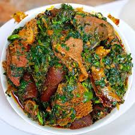

Home
Vegetable Soup

Description
Vegetable soup is a popular soup eaten in Nigeria. It normally
eaten with swallow like eba and fufu.
Ingredients
- Pumpkin leaves
- Water leaves
- Protein of choice; beef,chicken or turkey
- Palmoil
- Habanero pepper
- Onion
- Seasoning cubes and salt
Steps
- Cook your protein till tender
- Add your palmoil to the protein broth
- Then add your pepper and onion
- Add your washed pumpkin and water leaves
- Add seasonings and salt to taste
- Let it simmer and serve